Rats
Wanna hear a secret? This is kinda embarrassin, but... I used to have a dream once, like Pete does now. Yeah. I know, I'm still younger than him with a long future ahead of me. But what could I do? Life's too rough for that. Others say that Rats are a pathetic bunch who were too incompetent to join even the smallest Syndicate let alon a Wing. Filthy losers who feed on junk and leftovers, not making any effort to change...
Back when I was a young kid, I didn't like that. I thought I was better than those Rats. So I decided to get into an examinee town. Little did I know that it'd be the one choice I'd regret the most... I begged and nagged at my parents, wanting to achieve that stupid dream. How'd it go, you ask? Seems you're just as stupid, aren't you. I wouldn't be hanging out with these folks if I made it, now would I?
What I'm saying is, dreaming won't do jack shit for you. They didn't end up here because they gave up trying. Hell, they wouldn't have set foot on this gutter in the first place if they had what it takes to achieve their dreams. You get it now? Pete's a huge idiot.
Didja know? There's grades for each alley in the Backstreets. Funny, ain't it. Trash in a trash can are grading each other... The parts that're under the protection of a Syndicate, Office, or Association are pretty safe, Sweepers can't raid those streets easily. Putting the people who live there in a different grade from those who don't, though... is pointless, honestly speaking. Sure, it's a bit safer over there, but we're talking about the Backstreets, get it?
You know what's funnier? Even kids would group themselves according to what part of the streets they live in, They's even shun the others whose clothes or manner didn't fit their turf's style. I had no choice but to accept this sad truth.
You wonderin' how things were in the alleys I lived? Couldn't afford to pay protection fees to a Syndicate, so the Sweepers came down at night and collected most of my neighbors. I had to witness 'em take chunks of fless outta my parents and brothers while they were still breathing. Don't pity me, though. My story ain't nothing special around here.
There's not a lot of peeps who hang around in the Backstreets alone. It's cuz that's just madness. Weak and dowdy folks gotta band together to survive. Get into a small Syndicate or anything and make a living somehow. Some ignorant fool makes a scene in the Backstreets on their own, they're just making themselves a target as soon as others notice they're alone. That's why we move in groups. We're called Rats for a reason. We crawl about the dark in parks, and jump at prey for the chance to bite 'em apart when we spot one.
So, you wondering if we Rats have any dreams? Hmmm... I guess belonging to a proper Syndicate, if any. We're just too tacky and amateurish to be called one. We hate being bound to rules, so hell'll freeze over before one of us joins an Office, and no Rat I know would move to an examinee town and study for Wing entrance exams. Those nerds at examinee towns ain't too different from Rats like us. We're all dreaming silly dreams that'll never come true with out petty skills. An Office, a Wing, a Syndicate, or whatever... Think it's an easy task to belong to a decent group? People just accept what they got and live on. But still, I wanted to have a dream.
Brotherhood of Iron
I frankly don't recommend replacing your entire body with a machine. Especially with a cheap one. Aside from basic issues such as vulnerability to damage and creaky noises, cheap prosthetic bodies compromise too much. You're basically giving up all the joys of life. Can you imagine? You can't taste anything when you eat delicious food, and you can't feel the softness and coziness of a good bed. You can't feel anything get stuck in your body, be it a piece of paper or a knife. The head remembers those feelings, but you can't experience them again.
There are ways to overcome it, though. You can buy a desire stimulation chip and plug it in your brain, inject medications, or use other methods. They're just absurdly expensive. You're better off saving up for a more expensive prosthetic body if you really want your senses back. High quality, pricey bodies come with sensory organs. As I always say, it's all about money in this world.
What's your favorite food? That's the question I used to ask the most when I still had a human body. I love… looooove eating. Talking about food was a huge delight for me. We would share each other's tastes and preferences, and sometimes head to a restaurant for a meal just like that.
But now… My body's a machine as you can see. I can't taste anything anymore. Thanks for pointing that out. Mo told me to stop dreaming about it. I still wanna try more delicious foods, though. Hot and flavorful… Spicy and sweet… Stuff like that. I guess this body is too cheap to restrain delusional thoughts like this. If we get more money and change our bodies to new ones… then maybe I'll be able to stop these thoughts from getting in the way of my work?
The City consists of 25 Nests, and 25 Districts of the Backstreets that surround those Nests. And countless Offices and Syndicates reside in the Backstreets. You know what's a surefire way for a Syndicate to make a name for itself among all the competitors? The simplest method is Office raiding. You literally storm into an Office and wreak havoc on it.
You never know who will be the winner until you fight. It could stop at a good beating and one side surrendering, but some Syndicates raid Offices out of pure boredom and kill everyone. Each Syndicate has its own way of operation. It goes without saying that the Syndicate has more fame to gain out of raiding a high-grade Office filled with seasoned Fixers. So the Offices have to stay sharp at all times. But you'll also have to watch it. If you misjudge your opponents, you'll end up dead before you could try anything…